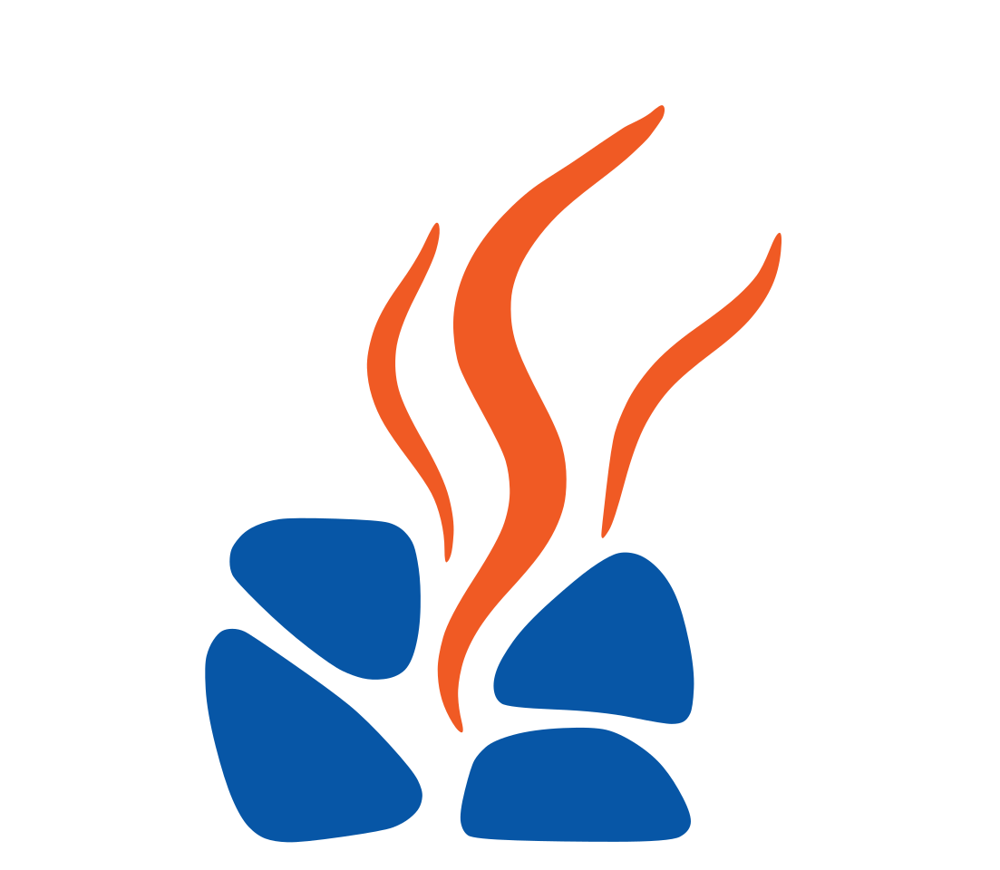

TORIKAI DEPOT
鳥飼車両基地
新幹線が並び、走る。鉄道ファンが訪れる、摂津の日常風景。

NEXT SETTSUALLIANCE 摂津をサウナの街に
NEXT SETTSU ALLIANCE
企業・学校・行政・地域が、部活のような軽さで参加できる連合体。
第一の拠点は「避ス地 未知の駅 摂津サウナ」（大阪府摂津市・鳥飼新幹線基地のよこ、2027年5月竣工予定）
摂津で、いま動いていること
NEXT SETTSU ALLIANCE ロゴ決定、JSA（ジャパンサウナ部アライアンス）と連携開始
CAMPFIRE クラウドファンディング開始予定
避ス地 未知の駅 摂津サウナ 第1期工事竣工予定
これは、サウナだけの計画ではありません
摂津をサウナの街にする、学生主体の連合体。
JSA（ジャパンサウナ部アライアンス）をモデルに、企業・学校・行政・地域が「部活」のような軽さで参加できる入口をつくります。
花岡工務店、学生、企業、地域の仲間が、それぞれの得意を持ち寄るプロジェクトです。
摂津が変わる、避ス地で変える。
企業コワーキング利用・協賛・サウナグッズOEM
学校部活のような軽さで参加する学生連合
行政地域課題・まちおこしへの連携
地域住民・商店・空き家再生の担い手
サウナから広がる、3つの事業領域
サウナOEM化・商品化し企業へ販売／設置
空き家再生発見だけでなく設計・資金調達・運営まで
Web販売サウナ以外も含め、良いものを募集・販売
長期目標は、JSAを超える規模の連合体になること。
NEXT SETTSU ALLIANCE 第一の拠点。ここは普通のサウナじゃない
避ス地 未知の駅 摂津サウナ
本格サウナ新幹線の見える屋外サウナ
カレー＆カフェ29年続いた伝説のカレー
イベントスペース中庭に電車車両、月1〜2回の企画
コワーキング木の温もりで働く・学ぶ
木のおもちゃ広場木育、家族の居場所
レンタルスペース貸し店舗・事務所 全24区画
学生が主体で、街をつくる

履歴書には書けない、本物の経験を。
実際の事業を、本物の経営者と一緒に動かす学生創設メンバー100名・初代幹部10名を募集しています。
摂津に、あるもの
TORIKAI DEPOT
新幹線が並び、走る。鉄道ファンが訪れる、摂津の日常風景。

LOCAL MATERIAL
地元でも出会う機会が少ない、摂津で受け継がれてきた農の味。

THE FOUNDER
何もなかった場所を、誰かの居場所へ。15人の職人仲間と、学生と、夢を追う人。
「99.9%に、どうせ無理と笑われた。
だから、やる価値がある。」
株式会社花岡工務店 代表 花岡雅仁
図面はもう、できている


CROWDFUNDING — 2026年7月末〜8月 開始予定
これは、お金を集めるだけのクラウドファンディングではありません。
この先20年、一緒に語り続ける仲間を集めるプロジェクトです。
この挑戦に、関わる
企業・学校・行政としての参加、学生創設メンバーへの応募、取材・応援については、メール・LINEにてお問い合わせください。
お問い合わせ窓口は準備中です。
NEXT SETTSU ALLIANCE
運営: 株式会社花岡工務店（大阪府摂津市新在家2-1-19）